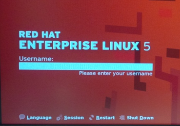

How To – Power Down the Instrumentation System
This How To provides the steps required to perform a complete power down of the instrumentation.
The proDAS hardware equipment should be left ON at all times. The system is only powered down for maintenance activities, anticipated power outages, or if a power failure occurs.
To Power Down the Instrumentation
There are two main steps in an instrumentation power down:
- Power Down proDAS.
- Power Down the Uninterruptible Power Supply (UPS).
Power Down proDAS
To perform a complete power down of the system:
In the Control Room
- On the Console, stop the proDAS software per the procedure Stopping proDAS in proDAS Integrated Help.
- On the Console, log off and power down the Real-Time Display computers (RTD1 - RTD4) using the standard Windows Shut Down procedure.
- On the UECU 500 Mark III Throttle Quadrant, power down the display PC by clicking on the MDS Aero Support logo in the top left-hand corner of the screen.
- Select Exit. The Shutdown window is displayed.
- Select Shutdown.
- On the Console, log off and power down the Management Graphic User Interface (GUI) computer using the standard Windows Shut Down procedure.
- On the PAK MKII Server PC, stop all active scanning and close the PAK MKII software.
- Power down the PAK MKII Mainframe according to the PAK MKII G2 User Manual.
- Power down the PAK MKII Server PC using the standard Windows Shutdown Procedure.
- Power down the EX1048A Temperature Scanners.
In the Computer Room
- Use the keyboard to acess the Linux Host Computer in Equipment Rack CM1, and from the login screen, select Shutdown.

- Power down the NAS equipment in equipment rack CM1.
- Power down the UECU-500 Mark III Throttle Actuator Chassis in equipment rack CM4 using the power switch on the back of the chassis.
- Power down the UECU-500 Mark III Throttle RVDT Chassis in equipment rack CM4 using the power switch on the back of the chassis.
- Power down the UECU-500 Mark III Throttle Controller Chassis in equipment rack CM4 using the power switch on the back of the chassis.
- Power down the VXI Chassis in Equipment Rack CM2.
- Power down the PCI Expansion Chassis in Equipment Rack CM1.
- Power down the TDK-Lambda power supply in equipment rack CM3.
- Power down the power bars in equipment racks CM1 to CM4.
- Power down the 5V and 12V power supplies in the scanner interface panel in equipment rack CM4.
Power Down the Uninterruptible Power Supply (UPS)
There is one UPS at the Trollhattan facility.
Ensure that the AC input is turned off before powering down a UPS. If the AC input is not turned off, systems connected to the UPS could still be receiving power.
For information on how to power down the UPS, see the OEM Operating Manual.